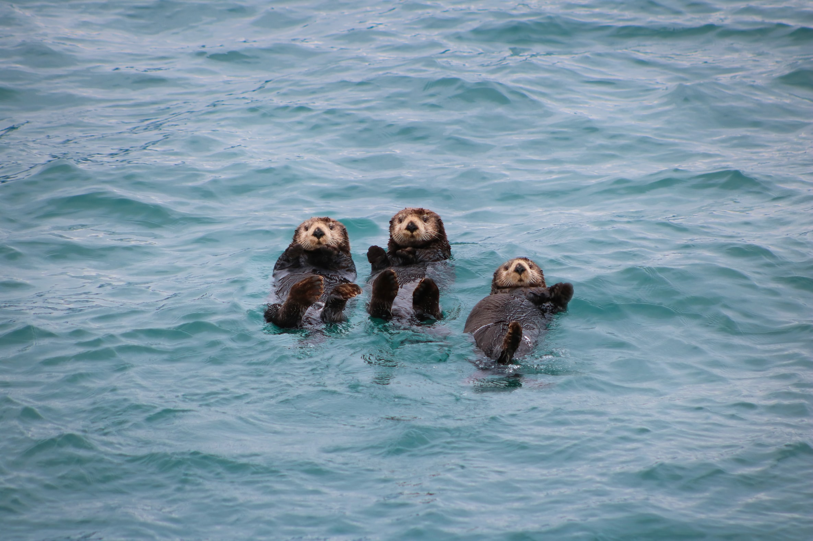

Otterly Essential
All about the sea otter
There are many types of otters in the world. Some live on land, some in freshwater, others in the sea. Some live in the Americas, others in Asia. However, only one species of otter is fully aquatic — Enhydra lutris. This is the species known as the sea otter.
Habitat
In the kelp forest, it eats sea urchins and other animals that graze on giant kelp. When urchins go unchecked, they create areas called “urchin barrens” where nothing else lives. With sea otters helping to keep the urchins under control, kelp forests can thrive and support a rich community of plants and animals.
Why are sea otters so cute?
With its thick and fluffy fur, large eyes and large noses, the sea otter may be — scientifically speaking — one of the cutest animals in the world.